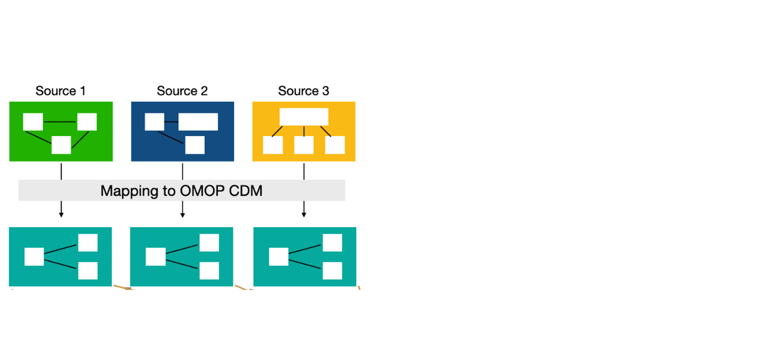
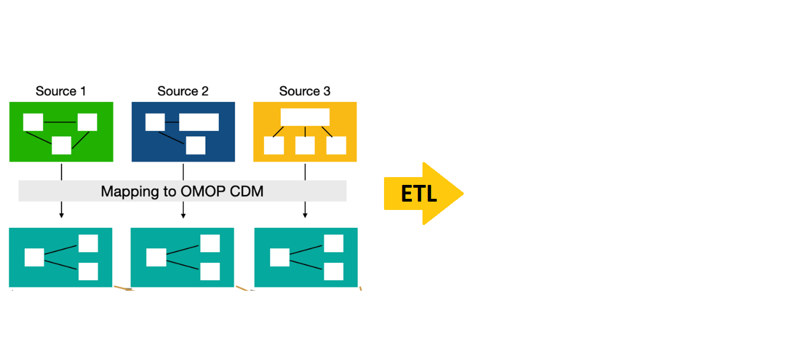
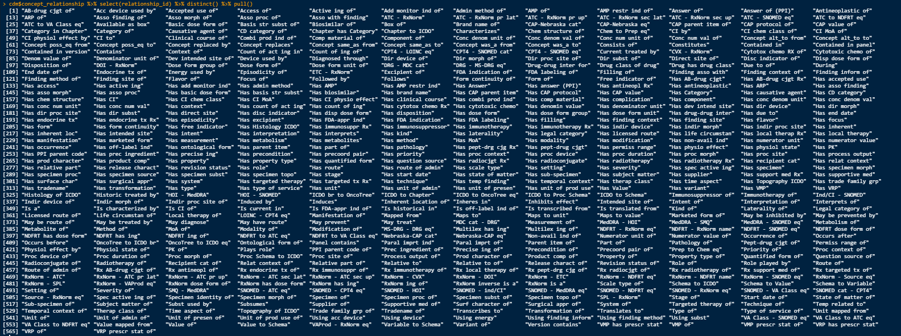
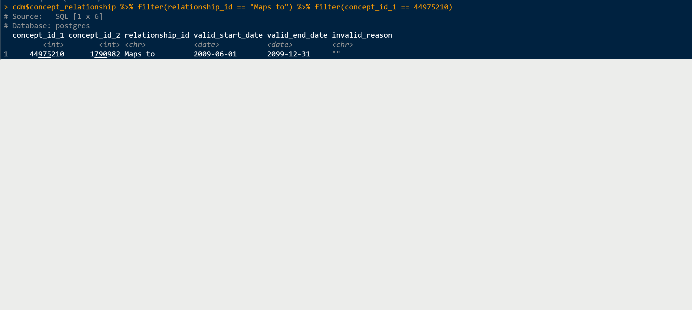
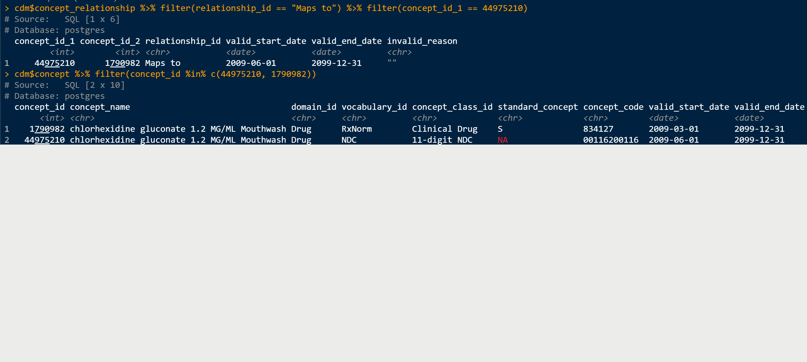
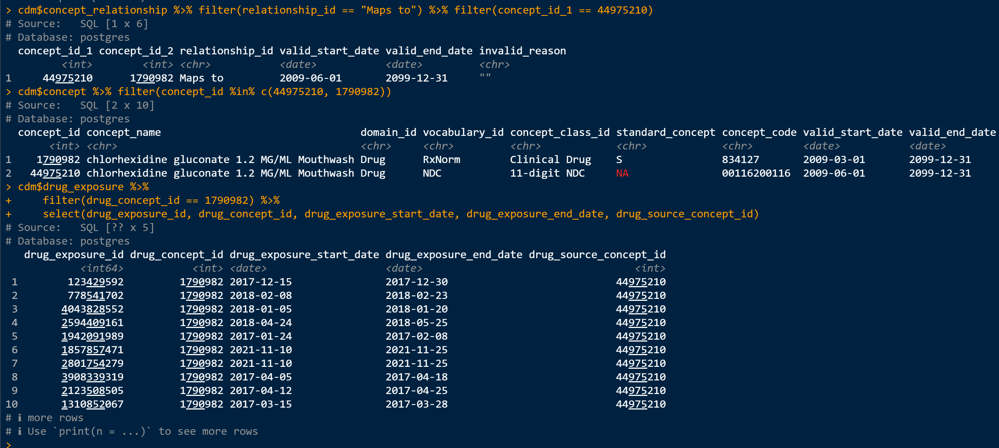
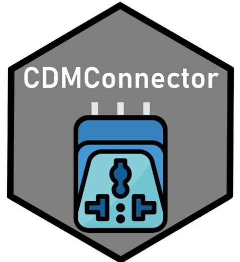

OMOP and CDMConnector
The OMOP Common Data Model
Introduction: The OMOP Common Data Model
Every time that someone goes to the doctor and something happens the doctors write it into their records.
Each annotation of the doctor is translated into a code, combination of letters and numbers that refers to a condition. There exist several different codding languages: SNOMED, read codes, ICD10, ICD9, RxNorm, ATC, … It depends on the region, language, type of record and others which one is used. This makes that the same condition or drug can be coded in different ways.
A compilation of these records for a group of people is what we call the medical databases. Depending on the origin and purpose of these data there are different groups of databases: electronic health records, claims data, registries… This databases can be structured by several different tables.
The Observational Medical Outcomes Partnership (OMOP) Common Data Model (CDM) is an open community data standard, designed to standardize the structure and content of observational data and to enable efficient analyses that can produce reliable evidence.
Standarization of the data format

Tables and relation in the OMOP Common Data Model
Mapping a database to the OMOP CDM
Mapping process
Mapping a database to the OMOP CDM
Mapping process
Mapping a database to the OMOP CDM

Mapping process
Standarization of the vocabularies
From all the vocabularies OMOP CDM uses only a few as Standard: SNOMED for conditions, RxNorm for drugs, …
The process to obtain an standard code from non standard one is called mapping. We can find the mapping in the concept_relationship table.
Each one of the records in clinical data tables (condition_occurrence, drug_exposure, measurement, observation, …) will be coded by two codes:
Source concept: particular to each database, it is the
originalcode.Standard concept: equivalent code from the standard vocabulary.
Example of mapping
In concept relationship we can find different information such as:
Concept relationship
In particular, we have the Maps to and Mapped from relations that can help us to see the mapping between codes.
Example of mapping
Mapping process
Example of mapping
Mapping process
Example of mapping
Mapping process
More details
For more details on how the vocabularies work you can check: Vocabulary course in EHDEN academy
All details about OMOP CDM and more can be found in: the book of ohdsi.

Connecting to a database from R (the DBI package)
Connecting to a database from R (the DBI package)
Connect to Sql server:
In this CDMConnector article you can see how to connect to the different supported DBMS.
Connect to eunomia
Eunomia is a synthetic OMOP database with ~2,600 individuals. It is freely available and you can download it as:
library(CDMConnector)
library(here)
downloadEunomiaData(pathToData = here("eunomia"), overwrite = TRUE)
Download completed!Sys.setenv("EUNOMIA_DATA_FOLDER" = here("eunomia"))To connect to this database we are going to use duckdb
library(duckdb)
db <- dbConnect(duckdb(), dbdir = eunomia_dir())
dbDatabases organization
Databases are organized by schemas (blueprint or plan that defines how the data will be organized and structured within the database).
In general, OMOP databases have two schemas:
cdm schema: it contains all the tables of the cdm. Usually we only will have reading permission for this schema.write schema: it is a place where we can store tables (like cohorts). We need writing permissions to this schema.
Eunomia only has a single schema (main) that will be used as cdm schema and write schema.
Read tables in Eunomia
With dbListTables we can see the tables that we can access from a connection:
dbListTables(db) [1] "care_site" "cdm_source" "concept" "concept_ancestor" "concept_class"
[6] "concept_relationship" "concept_synonym" "condition_era" "condition_occurrence" "cost"
[11] "death" "device_exposure" "domain" "dose_era" "drug_era"
[16] "drug_exposure" "drug_strength" "fact_relationship" "location" "measurement"
[21] "metadata" "note" "note_nlp" "observation" "observation_period"
[26] "payer_plan_period" "person" "procedure_occurrence" "provider" "relationship"
[31] "source_to_concept_map" "specimen" "visit_detail" "visit_occurrence" "vocabulary" Read tables in Eunomia
We can read one of this tables using dplyr:
# Source: table<person> [?? x 18]
# Database: DuckDB v0.10.0 [martics@Windows 10 x64:R 4.2.1/C:\Users\martics\AppData\Local\Temp\RtmpYfU4FN\file6eb017ac10fd.duckdb]
person_id gender_concept_id year_of_birth month_of_birth day_of_birth birth_datetime race_concept_id ethnicity_concept_id
<int> <int> <int> <int> <int> <dttm> <int> <int>
1 6 8532 1963 12 31 1963-12-31 00:00:00 8516 0
2 123 8507 1950 4 12 1950-04-12 00:00:00 8527 0
3 129 8507 1974 10 7 1974-10-07 00:00:00 8527 0
4 16 8532 1971 10 13 1971-10-13 00:00:00 8527 0
5 65 8532 1967 3 31 1967-03-31 00:00:00 8516 0
6 74 8532 1972 1 5 1972-01-05 00:00:00 8527 0
7 42 8532 1909 11 2 1909-11-02 00:00:00 8527 0
8 187 8507 1945 7 23 1945-07-23 00:00:00 8527 0
9 18 8532 1965 11 17 1965-11-17 00:00:00 8527 0
10 111 8532 1975 5 2 1975-05-02 00:00:00 8527 0
# ℹ more rows
# ℹ 10 more variables: location_id <int>, provider_id <int>, care_site_id <int>, person_source_value <chr>,
# gender_source_value <chr>, gender_source_concept_id <int>, race_source_value <chr>, race_source_concept_id <int>,
# ethnicity_source_value <chr>, ethnicity_source_concept_id <int>Read tables in Eunomia
You can save the reference of this person table to a variable:
person_db <- tbl(db, "person")
person_db# Source: table<person> [?? x 18]
# Database: DuckDB v0.10.0 [martics@Windows 10 x64:R 4.2.1/C:\Users\martics\AppData\Local\Temp\RtmpYfU4FN\file6eb017ac10fd.duckdb]
person_id gender_concept_id year_of_birth month_of_birth day_of_birth birth_datetime race_concept_id ethnicity_concept_id
<int> <int> <int> <int> <int> <dttm> <int> <int>
1 6 8532 1963 12 31 1963-12-31 00:00:00 8516 0
2 123 8507 1950 4 12 1950-04-12 00:00:00 8527 0
3 129 8507 1974 10 7 1974-10-07 00:00:00 8527 0
4 16 8532 1971 10 13 1971-10-13 00:00:00 8527 0
5 65 8532 1967 3 31 1967-03-31 00:00:00 8516 0
6 74 8532 1972 1 5 1972-01-05 00:00:00 8527 0
7 42 8532 1909 11 2 1909-11-02 00:00:00 8527 0
8 187 8507 1945 7 23 1945-07-23 00:00:00 8527 0
9 18 8532 1965 11 17 1965-11-17 00:00:00 8527 0
10 111 8532 1975 5 2 1975-05-02 00:00:00 8527 0
# ℹ more rows
# ℹ 10 more variables: location_id <int>, provider_id <int>, care_site_id <int>, person_source_value <chr>,
# gender_source_value <chr>, gender_source_concept_id <int>, race_source_value <chr>, race_source_concept_id <int>,
# ethnicity_source_value <chr>, ethnicity_source_concept_id <int>Read tables in Eunomia
Once we read a table we can operate with it and for example count the number of rows of person table.
person_db |>
count()# Source: SQL [1 x 1]
# Database: DuckDB v0.10.0 [martics@Windows 10 x64:R 4.2.1/C:\Users\martics\AppData\Local\Temp\RtmpYfU4FN\file6eb017ac10fd.duckdb]
n
<dbl>
1 2694Read tables in Eunomia
If you are familiarized with tidyverse you can use any of the usual dplyr commands in you database tables.
tbl(db, "drug_exposure") |>
group_by(drug_concept_id) |>
summarise(number_persons = n_distinct(person_id)) |>
collect() |>
arrange(desc(number_persons))# A tibble: 113 × 2
drug_concept_id number_persons
<int> <dbl>
1 40213227 2660
2 1127433 2580
3 40213160 2140
4 1713671 2021
5 19059056 1927
6 1118084 1844
7 40213296 1737
8 40213306 1560
9 1127078 1428
10 40229134 1393
# ℹ 103 more rowsCDMConnector
Creating a reference to the OMOP common data model
We already know what the structure of the OMOP CDM looks like. The CDMConnector package was made to help you to quickly create a reference to the OMOP CDM data as a whole.
- To install any of these packages that we use you can type:
install.packages("CDMConnector")in the console.
Creating a reference to the OMOP common data model
cdm <- cdmFromCon(con = db, cdmSchema = "main", writeSchema = "main")
cdm── # OMOP CDM reference (duckdb) of Synthea synthetic health database ────────────────────────────────────────────────────────────• omop tables: person, observation_period, visit_occurrence, visit_detail, condition_occurrence, drug_exposure,
procedure_occurrence, device_exposure, measurement, observation, death, note, note_nlp, specimen, fact_relationship, location,
care_site, provider, payer_plan_period, cost, drug_era, dose_era, condition_era, metadata, cdm_source, concept, vocabulary,
domain, concept_class, concept_relationship, relationship, concept_synonym, concept_ancestor, source_to_concept_map,
drug_strength• cohort tables: -• achilles tables: -• other tables: -Creating a reference to the OMOP common data model
Once we have created the our reference to the overall OMOP CDM, we can reference specific tables using the “$” operator or [[““]].
cdm$observation_period |> head(2)# Source: SQL [2 x 5]
# Database: DuckDB v0.10.0 [martics@Windows 10 x64:R 4.2.1/C:\Users\martics\AppData\Local\Temp\RtmpYfU4FN\file6eb017ac10fd.duckdb]
observation_period_id person_id observation_period_start_date observation_period_end_date period_type_concept_id
<int> <int> <date> <date> <int>
1 6 6 1963-12-31 2007-02-06 44814724
2 13 13 2009-04-26 2019-04-14 44814724cdm[["observation_period"]] |> head(2)# Source: SQL [2 x 5]
# Database: DuckDB v0.10.0 [martics@Windows 10 x64:R 4.2.1/C:\Users\martics\AppData\Local\Temp\RtmpYfU4FN\file6eb017ac10fd.duckdb]
observation_period_id person_id observation_period_start_date observation_period_end_date period_type_concept_id
<int> <int> <date> <date> <int>
1 6 6 1963-12-31 2007-02-06 44814724
2 13 13 2009-04-26 2019-04-14 44814724%>% head(2) was used to only show the first 2 lines.
Creating a reference to the OMOP common data model
With this you can start playing with the tables and for example see which are the individuals with more drug_exposure records:
Database name
When we have a cdm object we can check which is the name of that database using:
cdmName(cdm)[1] "Synthea synthetic health database"In some cases we want to give a database a name that we want, this can be done at the connection stage:
cdm <- cdmFromCon(
con = db, cdmSchema = "main", writeSchema = "main", cdmName = "EUNOMIA"
)cdmName(cdm)[1] "EUNOMIA"Database snapshot
The database snapshot is a useful tool to get information on the metadata of your database:
Rows: 13
Columns: 13
$ result_id <int> 1, 1, 1, 1, 1, 1, 1, 1, 1, 1, 1, 1, 1
$ cdm_name <chr> "EUNOMIA", "EUNOMIA", "EUNOMIA", "EUNOMIA", "EUNOMIA", "EUNOMIA", "EUNOMIA", "EUNOMIA", "EUNOMIA", "EUN…
$ group_name <chr> "overall", "overall", "overall", "overall", "overall", "overall", "overall", "overall", "overall", "ove…
$ group_level <chr> "overall", "overall", "overall", "overall", "overall", "overall", "overall", "overall", "overall", "ove…
$ strata_name <chr> "overall", "overall", "overall", "overall", "overall", "overall", "overall", "overall", "overall", "ove…
$ strata_level <chr> "overall", "overall", "overall", "overall", "overall", "overall", "overall", "overall", "overall", "ove…
$ variable_name <chr> "snapshot_date", "person_count", "observation_period_count", "cdm", "vocabulary", "cdm", "cdm", "cdm", …
$ variable_level <chr> NA, NA, NA, NA, NA, NA, NA, NA, NA, NA, NA, NA, NA
$ estimate_name <chr> "value", "count", "count", "source_name", "version", "version", "holder_name", "release_date", "descrip…
$ estimate_type <chr> "date", "integer", "integer", "character", "character", "character", "character", "character", "charact…
$ estimate_value <chr> "2024-06-14", "2694", "5343", "Synthea synthetic health database", "v5.0 18-JAN-19", "v5.3.1", "OHDSI C…
$ additional_name <chr> "overall", "overall", "overall", "overall", "overall", "overall", "overall", "overall", "overall", "ove…
$ additional_level <chr> "overall", "overall", "overall", "overall", "overall", "overall", "overall", "overall", "overall", "ove…Database snapshot
The database snapshot is a useful tool to get information on the metadata of your database:
# A tibble: 13 × 3
variable_name estimate_name estimate_value
<chr> <chr> <chr>
1 snapshot_date value 2024-06-14
2 person_count count 2694
3 observation_period_count count 5343
4 cdm source_name Synthea synthetic health database
5 vocabulary version v5.0 18-JAN-19
6 cdm version v5.3.1
7 cdm holder_name OHDSI Community
8 cdm release_date 2019-05-25
9 cdm description SyntheaTM is a Synthetic Patient Population Simulator. The goal is to ou…
10 cdm documentation_reference https://synthetichealth.github.io/synthea/
11 cdm source_type duckdb
12 observation_period_start_date min 1908-09-22
13 observation_period_end_date max 2019-07-03 In network studies this can be very useful to export the characteristics of each one of the databases.
Create a new table
Let’s say I want to subset the condition_occurrence table to a certain rows and certain columns and save it so I can later access it.
temporary table (default):
cdm$my_saved_table <- cdm$condition_occurrence |>
filter(condition_concept_id == 4112343) |>
select(person_id, condition_start_date) |>
compute()
dbListTables(db) [1] "care_site" "cdm_source" "concept" "concept_ancestor" "concept_class"
[6] "concept_relationship" "concept_synonym" "condition_era" "condition_occurrence" "cost"
[11] "death" "device_exposure" "domain" "dose_era" "drug_era"
[16] "drug_exposure" "drug_strength" "fact_relationship" "location" "measurement"
[21] "metadata" "note" "note_nlp" "observation" "observation_period"
[26] "og_001_1718352950" "payer_plan_period" "person" "procedure_occurrence" "provider"
[31] "relationship" "source_to_concept_map" "specimen" "visit_detail" "visit_occurrence"
[36] "vocabulary" Create a new table
permanent table:
cdm$my_saved_table <- cdm$condition_occurrence |>
filter(condition_concept_id == 4112343) |>
select(person_id, condition_start_date) |>
compute(name = "my_saved_table", temporary = FALSE)
dbListTables(db) [1] "care_site" "cdm_source" "concept" "concept_ancestor" "concept_class"
[6] "concept_relationship" "concept_synonym" "condition_era" "condition_occurrence" "cost"
[11] "death" "device_exposure" "domain" "dose_era" "drug_era"
[16] "drug_exposure" "drug_strength" "fact_relationship" "location" "measurement"
[21] "metadata" "my_saved_table" "note" "note_nlp" "observation"
[26] "observation_period" "og_001_1718352950" "payer_plan_period" "person" "procedure_occurrence"
[31] "provider" "relationship" "source_to_concept_map" "specimen" "visit_detail"
[36] "visit_occurrence" "vocabulary" Create a new table
cdm── # OMOP CDM reference (duckdb) of EUNOMIA ──────────────────────────────────────────────────────────────────────────────────────• omop tables: person, observation_period, visit_occurrence, visit_detail, condition_occurrence, drug_exposure,
procedure_occurrence, device_exposure, measurement, observation, death, note, note_nlp, specimen, fact_relationship, location,
care_site, provider, payer_plan_period, cost, drug_era, dose_era, condition_era, metadata, cdm_source, concept, vocabulary,
domain, concept_class, concept_relationship, relationship, concept_synonym, concept_ancestor, source_to_concept_map,
drug_strength• cohort tables: -• achilles tables: -• other tables: my_saved_tablecdm$my_saved_table# Source: table<main.my_saved_table> [?? x 2]
# Database: DuckDB v0.10.0 [martics@Windows 10 x64:R 4.2.1/C:\Users\martics\AppData\Local\Temp\RtmpYfU4FN\file6eb017ac10fd.duckdb]
person_id condition_start_date
<int> <date>
1 263 2015-10-02
2 439 1990-03-20
3 449 1999-12-12
4 515 1961-11-14
5 17 1963-12-02
6 30 1993-03-19
7 90 1970-01-15
8 116 1959-06-11
9 137 2005-11-15
10 176 1986-10-08
# ℹ more rowsDrop an existing table
To drop an existing table:
Eliminate the table from the cdm object.
Eliminate the table from the database.
cdm <- dropTable(cdm = cdm, name = "my_saved_table")
cdm── # OMOP CDM reference (duckdb) of EUNOMIA ──────────────────────────────────────────────────────────────────────────────────────• omop tables: person, observation_period, visit_occurrence, visit_detail, condition_occurrence, drug_exposure,
procedure_occurrence, device_exposure, measurement, observation, death, note, note_nlp, specimen, fact_relationship, location,
care_site, provider, payer_plan_period, cost, drug_era, dose_era, condition_era, metadata, cdm_source, concept, vocabulary,
domain, concept_class, concept_relationship, relationship, concept_synonym, concept_ancestor, source_to_concept_map,
drug_strength• cohort tables: -• achilles tables: -• other tables: -Drop an existing table
dbListTables(db) [1] "care_site" "cdm_source" "concept" "concept_ancestor" "concept_class"
[6] "concept_relationship" "concept_synonym" "condition_era" "condition_occurrence" "cost"
[11] "death" "device_exposure" "domain" "dose_era" "drug_era"
[16] "drug_exposure" "drug_strength" "fact_relationship" "location" "measurement"
[21] "metadata" "note" "note_nlp" "observation" "observation_period"
[26] "og_001_1718352950" "payer_plan_period" "person" "procedure_occurrence" "provider"
[31] "relationship" "source_to_concept_map" "specimen" "visit_detail" "visit_occurrence"
[36] "vocabulary" Drop an existing table
Let’s drop also the other table that we created:
cdm <- dropTable(cdm = cdm, name = starts_with("dbplyr"))
cdm── # OMOP CDM reference (duckdb) of EUNOMIA ──────────────────────────────────────────────────────────────────────────────────────• omop tables: person, observation_period, visit_occurrence, visit_detail, condition_occurrence, drug_exposure,
procedure_occurrence, device_exposure, measurement, observation, death, note, note_nlp, specimen, fact_relationship, location,
care_site, provider, payer_plan_period, cost, drug_era, dose_era, condition_era, metadata, cdm_source, concept, vocabulary,
domain, concept_class, concept_relationship, relationship, concept_synonym, concept_ancestor, source_to_concept_map,
drug_strength• cohort tables: -• achilles tables: -• other tables: -Drop an existing table
dbListTables(db) [1] "care_site" "cdm_source" "concept" "concept_ancestor" "concept_class"
[6] "concept_relationship" "concept_synonym" "condition_era" "condition_occurrence" "cost"
[11] "death" "device_exposure" "domain" "dose_era" "drug_era"
[16] "drug_exposure" "drug_strength" "fact_relationship" "location" "measurement"
[21] "metadata" "note" "note_nlp" "observation" "observation_period"
[26] "og_001_1718352950" "payer_plan_period" "person" "procedure_occurrence" "provider"
[31] "relationship" "source_to_concept_map" "specimen" "visit_detail" "visit_occurrence"
[36] "vocabulary" Insert a table
Let’s say we have a local tibble and we want to insert it in the cdm:
cdm <- insertTable(cdm = cdm, name = "my_test_table", table = cars)
cdm── # OMOP CDM reference (duckdb) of EUNOMIA ──────────────────────────────────────────────────────────────────────────────────────• omop tables: person, observation_period, visit_occurrence, visit_detail, condition_occurrence, drug_exposure,
procedure_occurrence, device_exposure, measurement, observation, death, note, note_nlp, specimen, fact_relationship, location,
care_site, provider, payer_plan_period, cost, drug_era, dose_era, condition_era, metadata, cdm_source, concept, vocabulary,
domain, concept_class, concept_relationship, relationship, concept_synonym, concept_ancestor, source_to_concept_map,
drug_strength• cohort tables: -• achilles tables: -• other tables: my_test_tableInsert a table
dbListTables(db) [1] "care_site" "cdm_source" "concept" "concept_ancestor" "concept_class"
[6] "concept_relationship" "concept_synonym" "condition_era" "condition_occurrence" "cost"
[11] "death" "device_exposure" "domain" "dose_era" "drug_era"
[16] "drug_exposure" "drug_strength" "fact_relationship" "location" "measurement"
[21] "metadata" "my_test_table" "note" "note_nlp" "observation"
[26] "observation_period" "og_001_1718352950" "payer_plan_period" "person" "procedure_occurrence"
[31] "provider" "relationship" "source_to_concept_map" "specimen" "visit_detail"
[36] "visit_occurrence" "vocabulary" cdm$my_test_table# Source: table<main.my_test_table> [?? x 2]
# Database: DuckDB v0.10.0 [martics@Windows 10 x64:R 4.2.1/C:\Users\martics\AppData\Local\Temp\RtmpYfU4FN\file6eb017ac10fd.duckdb]
speed dist
<dbl> <dbl>
1 4 2
2 4 10
3 7 4
4 7 22
5 8 16
6 9 10
7 10 18
8 10 26
9 10 34
10 11 17
# ℹ more rowsUse a prefix
It is VERY IMPORTANT that when we create the cdm object we use a prefix:
cdm <- cdmFromCon(
con = db,
cdmSchema = "main",
writeSchema = c(schema = "main", prefix = "my_prefix_")
)
cdm── # OMOP CDM reference (duckdb) of Synthea synthetic health database ────────────────────────────────────────────────────────────• omop tables: person, observation_period, visit_occurrence, visit_detail, condition_occurrence, drug_exposure,
procedure_occurrence, device_exposure, measurement, observation, death, note, note_nlp, specimen, fact_relationship, location,
care_site, provider, payer_plan_period, cost, drug_era, dose_era, condition_era, metadata, cdm_source, concept, vocabulary,
domain, concept_class, concept_relationship, relationship, concept_synonym, concept_ancestor, source_to_concept_map,
drug_strength• cohort tables: -• achilles tables: -• other tables: -Use a prefix
Now when we create a new table the prefix will be automatically added:
cdm <- insertTable(cdm = cdm, name = "my_test_table", table = cars)
cdm── # OMOP CDM reference (duckdb) of Synthea synthetic health database ────────────────────────────────────────────────────────────• omop tables: person, observation_period, visit_occurrence, visit_detail, condition_occurrence, drug_exposure,
procedure_occurrence, device_exposure, measurement, observation, death, note, note_nlp, specimen, fact_relationship, location,
care_site, provider, payer_plan_period, cost, drug_era, dose_era, condition_era, metadata, cdm_source, concept, vocabulary,
domain, concept_class, concept_relationship, relationship, concept_synonym, concept_ancestor, source_to_concept_map,
drug_strength• cohort tables: -• achilles tables: -• other tables: my_test_tableUse a prefix
dbListTables(db) [1] "care_site" "cdm_source" "concept" "concept_ancestor"
[5] "concept_class" "concept_relationship" "concept_synonym" "condition_era"
[9] "condition_occurrence" "cost" "death" "device_exposure"
[13] "domain" "dose_era" "drug_era" "drug_exposure"
[17] "drug_strength" "fact_relationship" "location" "measurement"
[21] "metadata" "my_prefix_my_test_table" "note" "note_nlp"
[25] "observation" "observation_period" "og_001_1718352950" "payer_plan_period"
[29] "person" "procedure_occurrence" "provider" "relationship"
[33] "source_to_concept_map" "specimen" "visit_detail" "visit_occurrence"
[37] "vocabulary" cdm$my_test_table# Source: table<main.my_prefix_my_test_table> [?? x 2]
# Database: DuckDB v0.10.0 [martics@Windows 10 x64:R 4.2.1/C:\Users\martics\AppData\Local\Temp\RtmpYfU4FN\file6eb017ac10fd.duckdb]
speed dist
<dbl> <dbl>
1 4 2
2 4 10
3 7 4
4 7 22
5 8 16
6 9 10
7 10 18
8 10 26
9 10 34
10 11 17
# ℹ more rowsUse a prefix
DO NOT use the prefix to drop tables, you only care about the prefix at the connection stage!
cdm <- dropTable(cdm = cdm, name = "my_prefix_my_test_table")
dbListTables(db) [1] "care_site" "cdm_source" "concept" "concept_ancestor"
[5] "concept_class" "concept_relationship" "concept_synonym" "condition_era"
[9] "condition_occurrence" "cost" "death" "device_exposure"
[13] "domain" "dose_era" "drug_era" "drug_exposure"
[17] "drug_strength" "fact_relationship" "location" "measurement"
[21] "metadata" "my_prefix_my_test_table" "note" "note_nlp"
[25] "observation" "observation_period" "og_001_1718352950" "payer_plan_period"
[29] "person" "procedure_occurrence" "provider" "relationship"
[33] "source_to_concept_map" "specimen" "visit_detail" "visit_occurrence"
[37] "vocabulary" Use a prefix
cdm── # OMOP CDM reference (duckdb) of Synthea synthetic health database ────────────────────────────────────────────────────────────• omop tables: person, observation_period, visit_occurrence, visit_detail, condition_occurrence, drug_exposure,
procedure_occurrence, device_exposure, measurement, observation, death, note, note_nlp, specimen, fact_relationship, location,
care_site, provider, payer_plan_period, cost, drug_era, dose_era, condition_era, metadata, cdm_source, concept, vocabulary,
domain, concept_class, concept_relationship, relationship, concept_synonym, concept_ancestor, source_to_concept_map,
drug_strength• cohort tables: -• achilles tables: -• other tables: my_test_tableUse a prefix
DO NOT use the prefix to drop tables, you only care about the prefix at the connection stage!
cdm <- dropTable(cdm = cdm, name = "my_test_table")
dbListTables(db) [1] "care_site" "cdm_source" "concept" "concept_ancestor" "concept_class"
[6] "concept_relationship" "concept_synonym" "condition_era" "condition_occurrence" "cost"
[11] "death" "device_exposure" "domain" "dose_era" "drug_era"
[16] "drug_exposure" "drug_strength" "fact_relationship" "location" "measurement"
[21] "metadata" "note" "note_nlp" "observation" "observation_period"
[26] "og_001_1718352950" "payer_plan_period" "person" "procedure_occurrence" "provider"
[31] "relationship" "source_to_concept_map" "specimen" "visit_detail" "visit_occurrence"
[36] "vocabulary" Use a prefix
cdm── # OMOP CDM reference (duckdb) of Synthea synthetic health database ────────────────────────────────────────────────────────────• omop tables: person, observation_period, visit_occurrence, visit_detail, condition_occurrence, drug_exposure,
procedure_occurrence, device_exposure, measurement, observation, death, note, note_nlp, specimen, fact_relationship, location,
care_site, provider, payer_plan_period, cost, drug_era, dose_era, condition_era, metadata, cdm_source, concept, vocabulary,
domain, concept_class, concept_relationship, relationship, concept_synonym, concept_ancestor, source_to_concept_map,
drug_strength• cohort tables: -• achilles tables: -• other tables: -Consistency rules
Temporary vs permanent (we will see more details later)
We use compute() to compute the result into a temporary (temporray = TRUE) or permanent (temporary = FALSE) table.
If it is a temporary table we can assign assign it to where I want for example:
cdm$my_custom_name <- cdm$person |> compute()If it is a permanent table we can only assign it to the same name:
error:
cdm$my_custom_name <- cdm$person |> compute(name = "not_my_custom_name", temporary = FALSE)Error in `[[<-` at OMOPGenerics/R/classCdmReference.R:503:2:
! You can't assign a table named not_my_custom_name to my_custom_name. Please use compute to change table name.no error:
cdm$my_custom_name <- cdm$person |> compute(name = "my_custom_name", temporary = FALSE)Consistency rules
Omop tables
Omop names are reserved words, e.g. we can not assign a table that is not the person table to cdm$person.
cdm$person <- cdm$drug_exposure |> compute(name = "person")cdm$drug_exposure <- cdm$drug_exposure |> rename("my_id" = "person_id") |> compute(name = "drug_exposure")Error in `db_compute()`:
! Can't copy query to table drug_exposure.
Caused by error in `db_save_query.DBIConnection()`:
! Can't save query to table drug_exposure.
ℹ Using SQL: CREATE TEMPORARY TABLE drug_exposure AS SELECT drug_exposure_id, person_id AS my_id, drug_concept_id,
drug_exposure_start_date, drug_exposure_start_datetime, drug_exposure_end_date, drug_exposure_end_datetime, verbatim_end_date,
drug_type_concept_id, stop_reason, refills, quantity, days_supply, sig, route_concept_id, lot_number, provider_id,
visit_occurrence_id, visit_detail_id, drug_source_value, drug_source_concept_id, route_source_value, dose_unit_source_value
FROM main.drug_exposure
Caused by error:
! rapi_prepare: Failed to prepare query CREATE TEMPORARY TABLE
drug_exposure AS
SELECT
drug_exposure_id,
person_id AS my_id,
drug_concept_id,
drug_exposure_start_date,
drug_exposure_start_datetime,
drug_exposure_end_date,
drug_exposure_end_datetime,
verbatim_end_date,
drug_type_concept_id,
stop_reason,
refills,
quantity,
days_supply,
sig,
route_concept_id,
lot_number,
provider_id,
visit_occurrence_id,
visit_detail_id,
drug_source_value,
drug_source_concept_id,
route_source_value,
dose_unit_source_value
FROM main.drug_exposure
Error: Catalog Error: Table with name drug_exposure does not exist!
Did you mean "drug_era"?
LINE 27: FROM main.drug_exposure
^